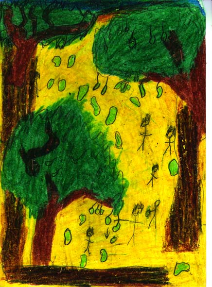
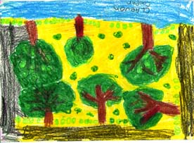
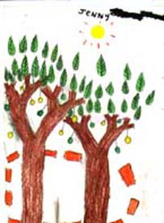
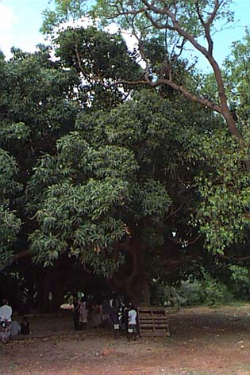
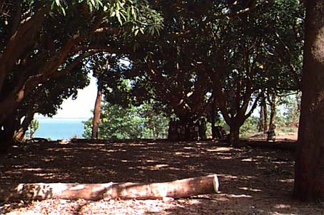

<!--This file created 15/12/97 14:38 by Claris Home Page version 2.0-->
<HTML>
<!-- Mirrored from www.nyu.edu/web.communications/jimtest/trees/manggu.html by HTTrack Website Copier/3.x [XR&CO'2014], Mon, 08 Feb 2021 15:14:24 GMT -->
<!-- Added by HTTrack --><meta http-equiv="content-type" content="text/html;charset=UTF-8" /><!-- /Added by HTTrack -->
<HEAD>
   <TITLE>manggu</TITLE>
   <META NAME=GENERATOR CONTENT="Claris Home Page 2.0">
   <X-SAS-WINDOW TOP=107 BOTTOM=480 LEFT=6 RIGHT=536>
</HEAD>
<BODY background="sunflowr.gif">

<P><CENTER><B><FONT SIZE="+4"></FONT></B></CENTER></P>

<P><TABLE BORDER=1>
   <TR>
      <TD>
         <P><CENTER><B><FONT SIZE="+2">Isiah</FONT></B></CENTER>
      </TD><TD>
         <P><CENTER><B><FONT SIZE="+2">Claevon </FONT></B></CENTER>
      </TD><TD>
         <P><CENTER><B><FONT SIZE="+2">Jenny</FONT></B></CENTER>
      </TD></TR>
</TABLE></P>

<P><CENTER><B><FONT SIZE="+3">MANGGU</FONT></B></CENTER></P>

<P><B><FONT SIZE="+1">Our special tree is called the mango tree. In
Burarra, our language, we call it manggu.</FONT></B></P>

<P><B><FONT SIZE="+1">The mango trees are opposite our school near
the beach and near Maningrida clinic.</FONT></B></P>

<P><B><FONT SIZE="+1">These mango trees are special because our
community have their meetings under them. It is very shady under the
mango trees.</FONT></B></P>

<P><B><FONT SIZE="+1">We measured one mango tree and it was 11m tall
and 220cm wide. </FONT></B></P>

<P><B><FONT SIZE="+1">Every year in November fruit grows on the mango
trees.</FONT></B></P>

<P><B><FONT SIZE="+1">All the kids love to eat mangoes.</FONT></B>
</P>

<P><CENTER></CENTER></P>

<P><B><FONT SIZE="+1">The scientific name for the mango tree is
</FONT><I><FONT SIZE="+1">Mangifera indica </FONT></I><FONT
SIZE="+1">Linnaeus.</FONT></B></P>

<P><B><FONT SIZE="+1">The mango tree is related to the cashew tree
and the pistachio tree.</FONT></B></P>

<P><B><FONT SIZE="+1">Mango trees grow near the equator because they
like tropical weather. The first mango trees grew in Burma and
India.</FONT></B></P>

<P><TABLE BORDER=0 CELLSPACING=4 CELLPADDING=8>
   <TR>
      <TD>
         <P><A HREF="home.html">home page</A>
      </TD><TD>
         <P><A HREF="jumbarrich.html">jumbarrich</A>
      </TD><TD>
         <P><A HREF="linksout.html">links</A>
      </TD></TR>
</TABLE></P>
</BODY>
<!-- Mirrored from www.nyu.edu/web.communications/jimtest/trees/manggu.html by HTTrack Website Copier/3.x [XR&CO'2014], Mon, 08 Feb 2021 15:14:29 GMT -->
</HTML>
